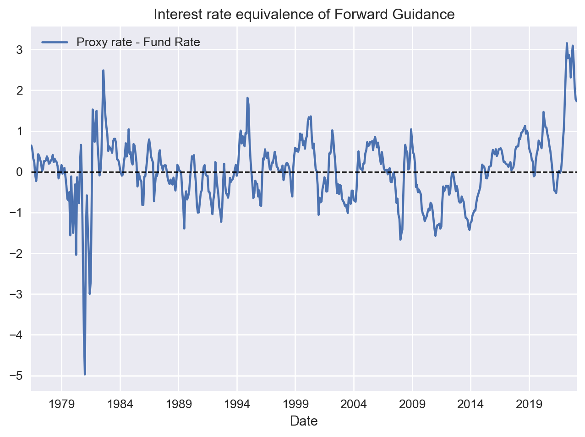
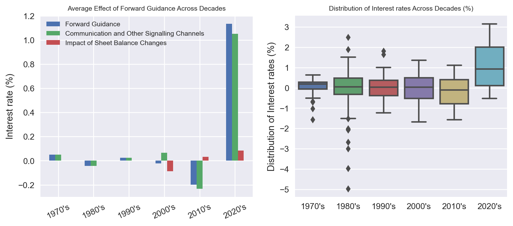
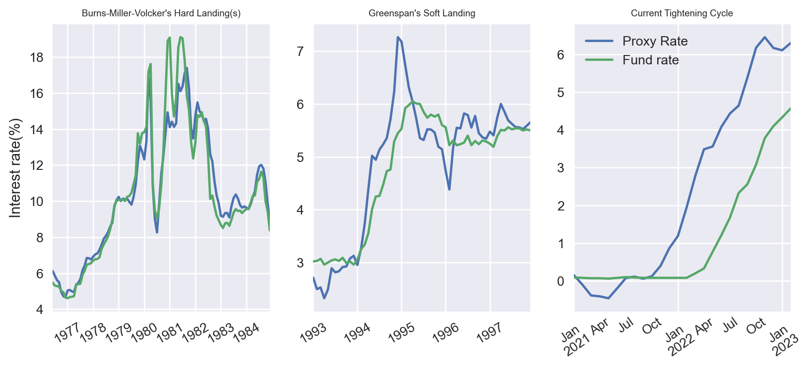

Fed’s Forward Guidance
Some Stylised Facts and recent performance
Monetary Policy
Inflation
Introduction
In the world of central banking, few policies have been as widely discussed in recent years as forward guidance and balance sheet changes. These policy tools (known as non-conventional policies), define the broader monetary policy stance that goes beyond than just setting the policy rate. For example, forward guidance1 is a method used by central banks to directly communicate or signal their intentions in order to shape expectations and influence interest rates in the desired direction. During the 2008 financial crisis, forward guidance and Quantitative Easing (QE) became especially critical tools, as the policy rate hit zero. In order to continue stimulating the economy, the Federal Reserve (Fed) needed to find new ways to do so. As Ben Bernanke put it, “we had to be creative.” Forward guidance allowed the Fed to do just that. More recently, forward guidance has played an important role in the ongoing debate over inflation. In this post, I will be looking at a few stylized facts about how the Fed uses this tool.
One way to measure the Fed’s forward guidance is to look at the “proxy rate,” which is published by the Federal Reserve Bank of San Francisco (See here and here). The proxy rate combines the Fed’s policy rate with the level of interest rate implied by the balance sheet changes and direct communication. Hence it incorporates the hypothetical interest rate that captures the total impact of balance sheet changes (which are also used to guide expectations) and statements on financial markets.
I have plotted the proxy and policy rate in Figure 1 below. Note that the proxy rate leads the actual policy rate because of the way monetary policy is implemented. Typically, the markets are set up in anticipation of a change in the policy rate before the change actually takes place. This pattern is (unsurprisingly) pronounced after 2007.
Before the global financial crisis, the proxy rate and the fund rate were closely correlated. However, they started to diverge after 2007, when quantitative easing (QE) and forward guidance became integral components of the monetary policy framework. During this period, the use of forward guidance amounted to a monetary policy stance of negative interest rates (validating the purpose that it was designed). These ultra-low interest rates persisted until 2014 according to the proxy rate. At that point the Fed started tightening its policy until the pandemic hit.
In recent years, many people (including respected academics) have criticized the Fed for acting too slowly to address the rising inflation. However, according to this evidence, the Fed began to tighten financial conditions well before the interest rate hikes took place. In fact, the actual tightening began eight months before the first rate hike in March 2022, and almost a year and a half after the pandemic shock. Note that when the Fed changed course, inflation was mostly driven by supply-side factors, such as supply chain disruptions and labor shortages. As a result, there was less room for monetary policy to do much. However, the Fed clearly began to change course before the pressure from the demand side on inflation started to substantially pick up.
It’s worth emphasizing that even prior to the Global Financial Crisis (GFC), the proxy rate and the fund rate were not identical. Part of this discrepancy can be attributed to the inevitable measurement errors involved in calculating a statistical measure such as the proxy rate. Of course, it’s impossible to completely eliminate statistical errors, but we can reasonably assume that most of the difference between the proxy rate and the fund rate can be attributed to communication-related factors.
Measuring Forward Guidance: “Until We Finish the Job”
The difference between the proxy and policy rate shows the level of interest rate implied by the Fed’s forward guidance. Figure 2 shows exactly this. For example, at the peak of the proxy rate during this monetary policy tightening cycle, the Fed added an extra 3% to the policy rate by just pointing what will be doing. This means that until October 2022, the economy was effectively operating at an interest rate level closer to 6% than the official policy rate of 3%2. It was only after October 2022 that the proxy rate start coming off, signaling a less hawkish stance.

What is interesting is that in recent years, when the Fed had to fight the largest increase in inflation since the 1970s, its tone changed to an equally extreme level. In fact, the evidence in Figure 2 suggests that the effects of its direct communication and balance sheet changes had the largest impact in the US history. Meanwhile, the Fed has raised interest rates at the fastest pace in US history, and the current level of interest rates already implies a significant impact on large effect on output. This suggests that we are currently witnessing the most hawkish monetary policy stance in modern US history, and its effects are just starting to emerge.
Has Forward Guidance changed ?

The implications for Soft Landing
Assessing the possibility of a soft landing, that’s a whole other post. Instead, I’ll focus on what this evidence means for soft landing. This discussion may already be moot after the recent mini banking crisis, but it’s still helpful to step back and think how we started.
First, let me say that all central banks are effectively aiming for a soft landing. This means reducing inflation without causing a recession. Technically, only the Fed is required to balance maximum employment and price stability. Other central banks don’t have this restriction3.
Yet soft landing is still the holy grail of central banking. R.Dornbusch famously said, “No postwar recovery has died in bed of old age—the Federal Reserve has murdered every one of them”. The most notable (and technically the only) soft landing in the most recent 16 business cycles occurred in 1994 under Alan Greenspan. Inflation was rising rapidly in 1994, and Greenspan raised interest rates seven times in the space of a year, bringing them up to 6%. This was a significant increase, but it did not cause a recession. In fact, the economy continued to grow throughout 1994 and 1995. Why was it successful? Economists will pick three main reasons:
- First, the economy was strong at the time, which helped to cushion the impact of the higher interest rates.
- Second, Greenspan was able to communicate his intentions clearly to the public, which helped to reduce uncertainty.
- Third, Greenspan was able to raise interest rates gradually, giving businesses and consumers time to adjust.
In Figure 3 I plot this episode and compared it with the current tightening cycle. I have also added the “Hard landing” of Volcker (effectively begun by Burns and Miller) to make the case more clear. Before 1980s any comparisons are less meaningful (the Gold Standard, substantially different monetary policy framework, fiscal dominance). The three pre-conditions I enlisted before, continue to hold. The reaction function of the Fed under Greenspan and now are quite similar, including making up for the “long and variable lags” of Friedman.

All these means is that the necessary conditions for soft-landing were set by the Fed. Against the consensus belief, it acted quite in advance and taking into account that the “long-variable-lags” practically imply a period of 1-2 years to see the effects of monetary policy
Footnotes
Throughout this post, I would be using this term to refer to the effects of direct communication or the signaling channel of balance sheet changes.↩︎
It is sometimes surprising to hear Fed officials (such as James B. Bullard) support their arguments for the appropriate policy rate by referring to the Taylor rule, without considering the effects of direct communication, including the signals that their analysis sends to the markets. But it is even more surprising that analysts, journalists, and strategists often perpetuate the flaws in their thinking.↩︎
Although, they still care about unemployment to avoid overshooting or undershooting inflation↩︎